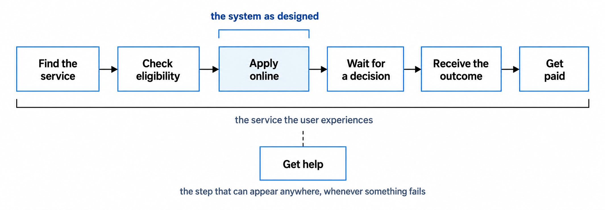
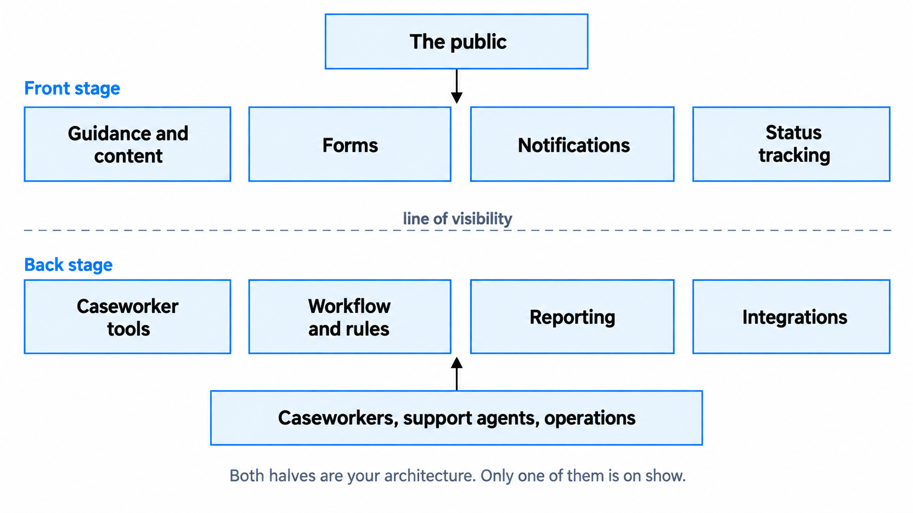
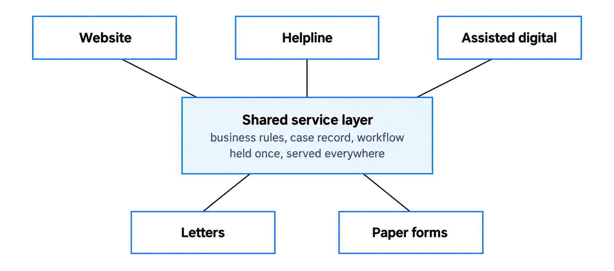
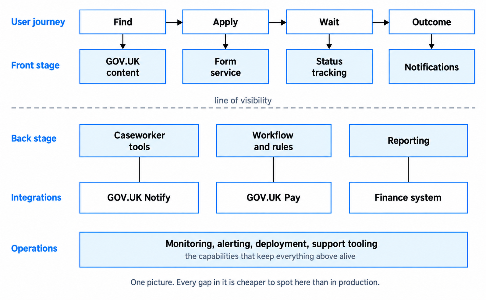

Designing end to end services
Connect the user journey, supporting systems and operations into one coherent service.
You'll come away with:
- A way to define the service around a user outcome rather than a system boundary.
- A method for connecting journey steps to processes, data, integrations and failure handling.
- A practical view of front-stage and back-stage architecture across the channels users need.
- Questions that bring operation, support, change and retirement into the design.
Start with the service boundary
End-to-end service design begins by defining what the service must achieve and where its responsibility begins and ends.
A system boundary shows what a technical solution contains. A service boundary starts with the outcome a user is trying to achieve and follows what must happen from beginning to end. Both views matter, but they answer different questions.
Someone applying for a grant may need to find the service, understand whether it is suitable, apply, provide evidence, receive a decision, challenge it where applicable and receive the outcome. Staff may need to assess the case, manage exceptions, communicate with the applicant and complete downstream work. Suppliers and other public bodies may provide parts of the journey.
The GOV.UK Service Manual describes good services as working from beginning to end, from front to back and across the channels users need. The Service Standard asks teams to work towards solving a whole problem for users and to provide a joined-up experience across the necessary channels. This does not mean one team must own every part. It means the boundaries, hand-offs and dependencies must be understood.

The technical solution is part of the service, not the boundary of it.
Map the journey to architecture evidence
Start with evidence from user research, service design, policy, operations and how the service works today. A journey map is useful, but it should not become an invented happy path that nobody has observed.
For each significant step, ask:
- What is the user trying to achieve, and through which channel?
- Which person, team or organisation is responsible?
- What process, system and data support the step?
- Which hand-offs or external dependencies are involved?
- What requirements and constraints apply here?
- What can fail, and what happens to the user and the service when it does?
- What evidence or measure would show that the step works?
Follow status changes and waiting periods as carefully as screens. "User waits for a decision" may hide queues, evidence checks, case allocation, supplier responses, notifications and escalation. Those activities often create the data, integration and operational requirements that a component diagram alone will not reveal.
Connect front stage and back stage
A useful service-design model separates the front stage, which users experience directly, from the back stage of staff activity, processes, rules, systems and data. This is a teaching model rather than a prescribed government architecture framework.

Caseworkers, support staff and operational teams are users of the tools they need to perform their roles. Understand their tasks, volumes, exception cases, accessibility needs and decision authority. A slow or unclear internal process can delay the public outcome even when the public-facing transaction works well.
Decide what crosses the line of visibility. Users may need a clear status, expected timescale, decision explanation or route to challenge. Staff may need case history, evidence and safe actions. Privacy, security and need-to-know access still apply, so visibility should follow user needs and role responsibilities rather than a general rule that everyone should see everything.
Join channels without forcing one implementation
The Service Standard says teams should work towards meeting users' needs across the channels they need, which could include online, telephone, paper and face to face. It does not require every service to offer every channel all the time.
Users should receive a coherent service when they move between channels. Statuses, decisions and important information should mean the same thing. Staff supporting another channel need enough accurate information to continue the journey without making the user start again.

A shared rules, case and workflow layer is one way to improve consistency, but it is not automatically the right architecture. Existing systems, resilience, latency, security, ownership and migration constraints may justify another approach. The requirement is a joined-up experience; the implementation still needs option appraisal.
Assisted digital support has a more specific meaning: helping people use the online parts of a service when they cannot or will not complete them independently. Its channels, staffing, funding, privacy controls and performance measures should be based on user research. It should not be treated as another name for every offline route.
Design the hand-offs and failure paths
Map transitions between people, teams, systems and organisations. For each hand-off, make the owner, data, status and expected response clear. Identify what happens when information is incomplete, an external service is unavailable, a message is duplicated, a notification fails or a case needs manual review.
The response depends on impact and context. It might involve retrying safely, queuing work, reconciling later, giving staff a controlled action, switching to a fallback process or telling the user what to do next. Record where responsibility passes to another organisation and how the team will know whether that part of the journey has completed.
Design negative outcomes too. Rejection, ineligibility, withdrawal, expiry and challenge can have their own evidence, communication, retention and audit requirements. They are part of the service when real users encounter them.
Make the service operable and supportable
Operational requirements should influence the architecture before live service. Establish service hours, support responsibilities, recovery needs, acceptable degradation and the impact of failure. Then design the monitoring, alerting, logging, audit, deployment, rollback, backup, recovery and support controls needed to meet them.
The Service Standard requires appropriate monitoring and a proportionate, sustainable plan for responding to problems. That does not mean every service needs 24-hour human support or the same operational tooling. The response should reflect user impact, service criticality and the agreed requirements.
Support staff need information they can understand and actions they are authorised to take. This may require searchable logs, correlation identifiers, case history, diagnostic views or controlled ways to resend a notification and retry work. Protect personal data, restrict privileged actions and keep an audit trail.
A service is not ready for live operation until the organisation can monitor, support, recover and change it safely.
Design for change through the lifecycle
The architecture develops as the evidence changes. Discovery establishes the outcome, wider journey, constraints and uncertainty. Alpha tests the riskiest assumptions with prototypes that need not cover the whole journey or become production code. Beta builds the service for real, integrates it with existing services and prepares for live operation. Live combines sustainable support with continued research and improvement.
Design decisions can be made and revised in every phase. Record significant decisions, assumptions and review triggers rather than suggesting that architecture is fixed during beta.
Separate rules that are likely to change when doing so makes change safer and easier. Configuration or a rules component may help, but it also needs validation, versioning, testing, access control and audit. Do not add flexibility for imagined changes that have no evidence behind them.
Retirement is also a service change. Plan how users will continue to meet their need, how API consumers and support channels will be handled, what happens to information, and how contracts, integrations and infrastructure will be closed. The detail can develop later, but early choices should not make safe exit unnecessarily difficult.
Build views that expose gaps
A service architecture view can connect the journey, channels, front-stage components, back-stage work, data, external dependencies and operational capabilities. It is not a mandatory government artefact, and one large diagram is not always the clearest answer. A service blueprint, process model, context diagram and focused technical views may work better together.

Use the view to find missing ownership, unsupported touchpoints, inconsistent statuses, duplicated rules, unmonitored dependencies and failure paths with no recovery. Build and review it with the people who understand the service, including users, operations, support, policy, product, delivery and relevant specialists.
Keep only the detail that helps people understand or decide something. Give each useful view an owner and update it when the service changes. A diagram that no longer reflects the service creates false confidence.
Questions to ask on a real service
- What outcome is the user trying to achieve, and where does the journey begin and end?
- Which organisations, teams, suppliers and existing services contribute to it?
- What happens before, after and between the screens we are designing?
- Which online, telephone, paper, face-to-face or assisted digital routes do users need?
- Can a user move between those routes without losing progress or repeating information unnecessarily?
- What do staff need to complete their work safely and efficiently?
- Where are the hand-offs, waiting periods, exceptions and failure paths?
- How will the organisation monitor, support, recover and improve the service?
- Which assumptions about policy, demand, technology or operations could change the design?
- How will user needs, information and dependencies be handled when the service retires?
This guide describes practical ways for Solution Architects to contribute to end-to-end service design. Service design is multidisciplinary, and the models and architecture questions used here are teaching aids rather than an official government method.
Last reviewed September 2026 against the primary guidance below. Government policy and guidance change, so check the source before relying on it.
- GOV.UK Service Manual: Designing good government services
- GOV.UK Service Manual: How the discovery phase works
- Service Standard: Solve a whole problem for users
- Service Standard: Provide a joined-up experience across all channels
- Service Standard: Operate a reliable service
- GOV.UK Service Manual: Designing assisted digital support
- GOV.UK Service Manual: How the alpha phase works
- GOV.UK Service Manual: How the beta phase works
- GOV.UK Service Manual: How the live phase works
- GOV.UK Service Manual: Retiring your service